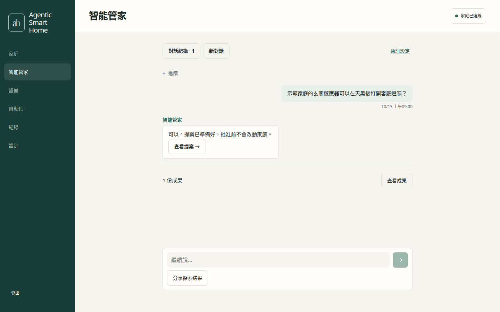
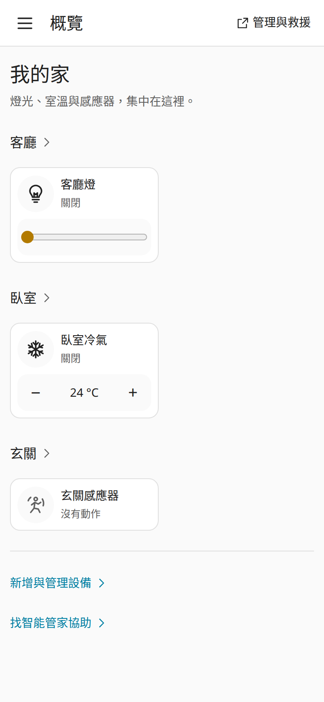
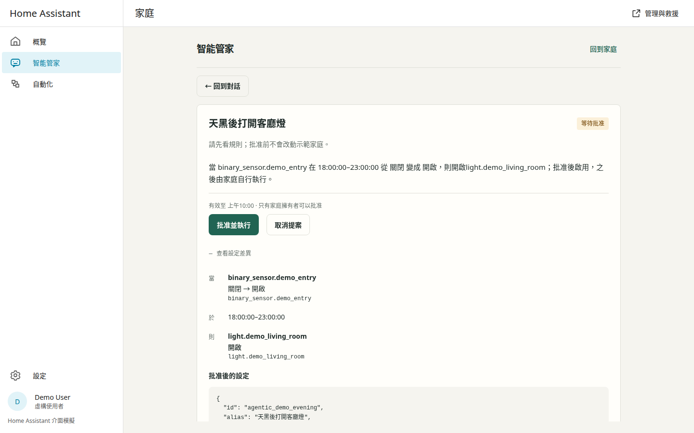
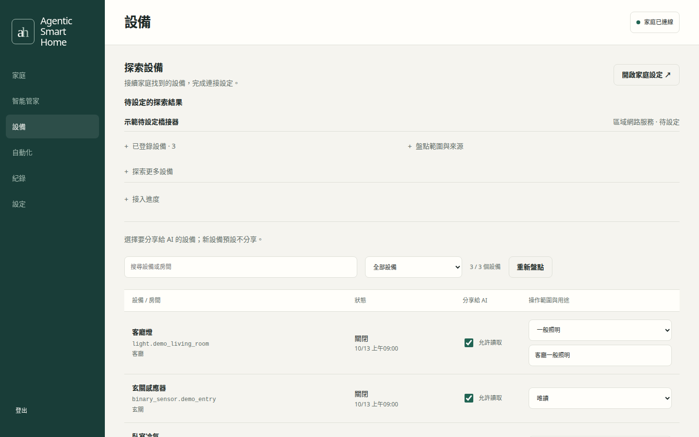
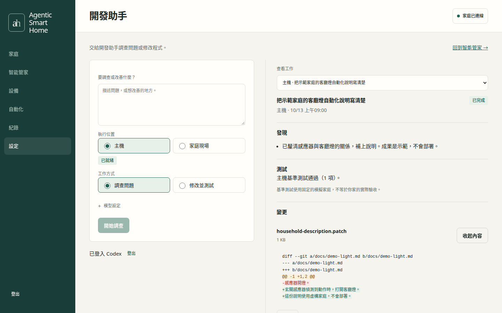
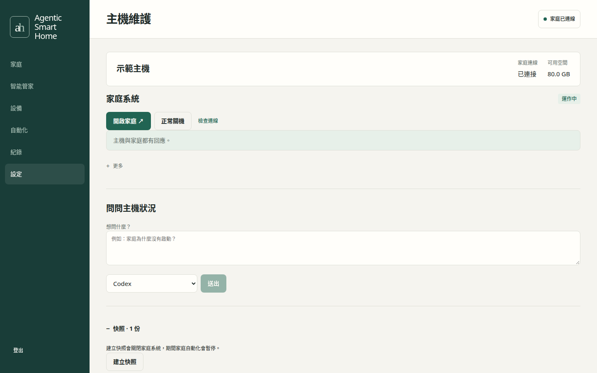
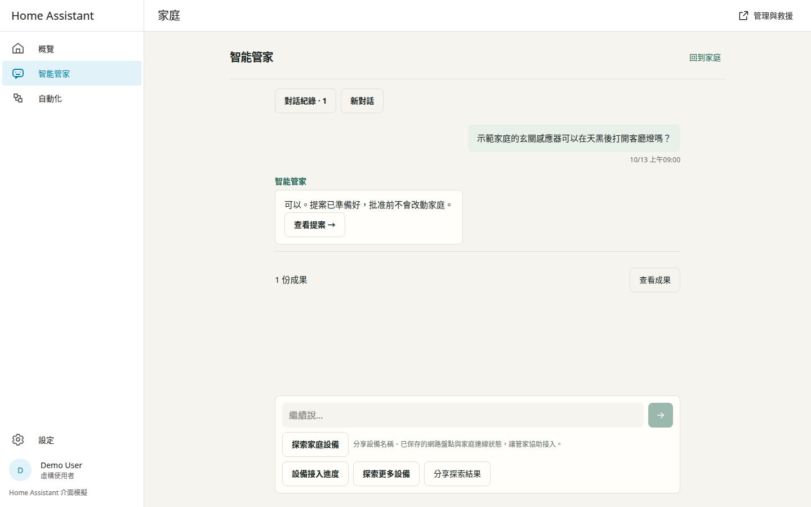

Agentic
Smart Home
一台 Linux 主機，裝好就有 Home Assistant 家庭、智能管家與開發助手。Home Assistant, a tool-using assistant and coding helpers. One Linux host.
Demo interface in Traditional Chinese.

AI 提案，你批准AI proposes. You approve.
- 提案Propose看清楚改什麼。See the exact change.
- 你批准Approve決定是否執行。Make the call.
- 備份Back up先保存家庭設定。Save the home configuration.
- 寫入Write套用批准的內容。Apply the approved change.
- 讀回確認Read back確認設定與狀態。Check configuration and state.
- 留下紀錄Keep a record需求與結果一起保留。Keep request and outcome together.
看看介面Take a look
把需求說給管家聽。Tell the assistant what you need.
實際介面，示範資料Actual interface, demo data

先看精確內容，再批准。Review the exact change before approval.
實際介面，示範資料Actual interface, demo data

自己選擇分享哪些設備。Choose which devices to share.
實際介面，示範資料Actual interface, demo data

查看發現、測試與變更。Inspect findings, tests and changes.
實際介面，示範資料Actual interface, demo data

家庭狀態、快照與救援。Home status, snapshots and rescue.
實際介面，示範資料Actual interface, demo data

同一條對話，在家庭側欄繼續。Continue the same conversation in the home sidebar.
實際介面，示範資料Actual interface, demo data
手機也能看提案、做決定。Review proposals and decide on your phone.
實際介面，示範資料Actual interface, demo data
一台主機，兩個現場One host. Two workspaces.
Ubuntu Linux
- Controller · 對話與批准Controller · Conversations and approvals
- Hermes · 智能管家Hermes · Tool-using assistant
- Host broker · 隔離開發、驗證與維護Host broker · Isolated coding, verification and maintenance
- Runner、LINE.js · 受控 CLI 與通訊Runner, LINE.js · Controlled CLIs and messaging
KVM → Home Assistant OS
- 官方 Home AssistantOfficial Home Assistant
- 智能管家側欄 AppAssistant sidebar App連接同一個 Controller 與 Hermes。Connected to the same Controller and Hermes.
- 家庭現場 AppHome coding App獨立登入的開發助手。A coding helper with its own sign-in.
開始安裝Get started
需求與詳細步驟Requirements and instructions →- 製作安裝 USB，開機後選網路、磁碟和帳號。Create an installation USB. Boot and choose network, disk and account.
- 重開機並登入桌面，Agentic Home 自動打開。Restart and sign in to the desktop. Agentic Home opens automatically.
- 照畫面完成 AI 帳號、智能管家、通訊與家庭。Follow setup for your AI account, assistant, messaging and home.